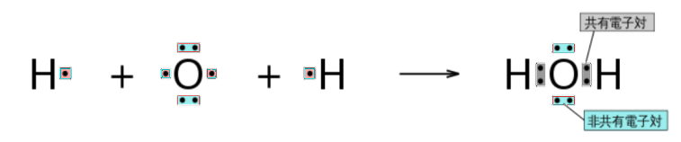
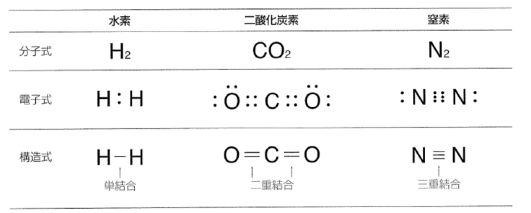
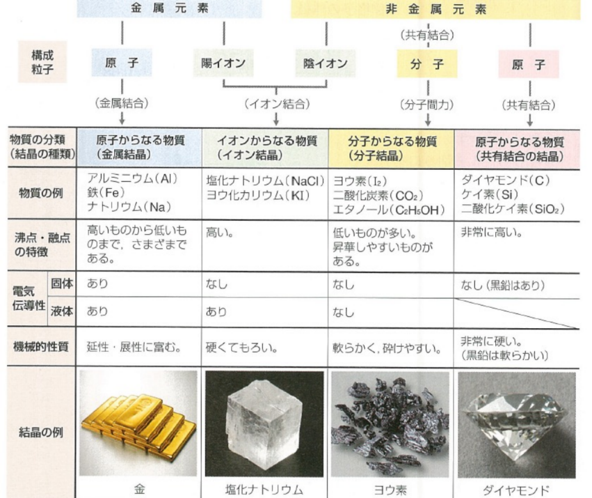
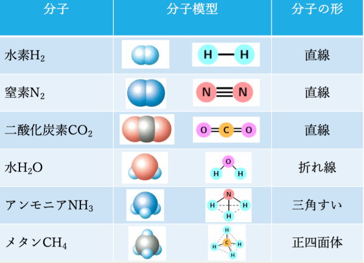

化学結合
１、 化学結合
原子どうしやイオンどうしの強い結びつきを化学結合という。化学結合には、「金属結合」「イオン結合」「共有結合」がある。
２、 金属結合
1) 金属結合：⾃由電⼦による⾦属原⼦の間の結合。
2) 自由電子：金属原子から放出された価電子で、特定の原子に属さず、金属全体の中を自由に移動できる電子。
3) 金属結晶：金属結合で結ばれた金属原子の固体。
4) 金属結晶の性質：
① 金属光沢がある。
② 熱伝導性や電気伝導性が大きい。
③ 展性（薄く広げることのできる性質）
④ 延性（線状に引き延ばすことのできる性質）
３、 イオン結合
1) イオン結合：陽イオンと陰イオンの静電気的な引⼒(クーロン⼒)による結合。
2) イオンからなる物質
① 表し⽅：組成式(構成イオンの種類とその数の割合を最も簡単な整数⽐で表した化学式)
② イオン結晶：陽イオンと陰イオンがイオン結合によってできた結晶。
③ イオン結晶の性質：
i. ⼀般に、融点が高い。
ii. 硬いが、強い⼒を加えると結晶の特定な⾯に沿って割れやすい。
iii. 固体は電気を通さないが、⽔溶液にしたり、融解したりすると電気を通す。
3) イオン結晶：陽イオンと陰イオンがイオン結合によってできた結晶。
４、 共有結合と分子
1) 分子：いくつかの原⼦から構成される電荷的に中性な粒⼦。
2) 分⼦の形成と共有結合：希ガス以外の⾮⾦属元素の原⼦どうしは、互いに価電⼦を出し合い、共有することによって、希ガスの原⼦と同じ安定な電⼦配置をとろうとする傾向がある。このようにして原⼦間には強い結合(共有結合)が⽣じ、分⼦が形成される。
※ 分⼦の電⼦総数：分⼦を構成するすべての原⼦の原⼦番号の和
3) 分⼦の種類：単原⼦分⼦、⼆原⼦分⼦、多原⼦分⼦
4) 分⼦の表し⽅：
① 分⼦式
② 電⼦式：元素記号の周りに、最外殻電⼦を・で表した化学式。
i. 原⼦の電⼦式
 図201 原子の電子式 ii. 分⼦の電⼦式
 図202 分子の電子式 画分⼦的电⼦式的步骤：
1. 根据分⼦式，先画出所有构成原⼦的电⼦式
2. 将不对电⼦在原⼦之间组成共有电⼦对
3. 检查每个原⼦周围都满⾜8个电⼦(H原⼦是2个电⼦)
③ 構造式：1組の共有電⼦対(：)を価標と呼ばれる1本の線(−)で表した化学式。構造式では、⾮共有電⼦対が省略されている。
電⼦対：最外殻電⼦のうち、2 個で対となった電⼦。
不対電⼦：対になっていない電⼦。
5) 分⼦の形：分⼦の⽴体的な形はさまざまである。
6) 配位結合：電⼦対が⼀⽅の原⼦(団)だけから提供されることで形成した共有結合を、特に配位結合という。
7) 分⼦の極性
① 電気陰性度：原⼦が共有電⼦対を引きつける強さを数値で表したもの。
② 結合の極性： 共有電⼦対が⼀⽅の原⼦に偏っているとき、「結合に極性がある」という。
③ 分⼦の極性：
i. ⼆原⼦分⼦の場合：分⼦の極性は結合の極性に⼀致する
ii. 多原⼦分⼦の場合：分⼦の極性には分⼦の形が関係する
周期表上で、希ガスを除いて、右上にいくほど電気陰性度は⼤きくなり、フッ素で最⼤となる。
8) 分⼦間⼒：分⼦間にはたらく弱い引⼒
① ファンデルワールス⼒
i. 全ての分⼦間にはたらく引⼒
ii. 極性分⼦間にはたらく静電気的な引⼒
② ⽔素結合：⽔素原⼦を介して隣接する分⼦が静電的に引き合う結合。主にN・O・Fのような電気陰性度の⾼い原⼦に結合した⽔素が関与する。ファンデルワールス⼒より強いが、共有結合やイオン結合よりは弱い。
9) 共有結合の結晶：多数の原⼦が共有結合でつながった結晶
10) 分⼦結晶：多数の分⼦が分⼦間⼒で引き合い、規則正しく配列してできた結晶
 図204
※ 構造式は、分⼦中における原⼦の結合の様⼦を平⾯的に表したもので、必ずしも実際の形とは⼀致しない。
 図203 例：アンモニウムイオンNH4+，オキソニウムイオンH3O+
例：ダイヤモンド、ケイ素、二酸化珪素
合金
| 合金 | 成分 | 特徴 | 用途 |
|---|---|---|---|
| ステンレス鋼 | Fe, Cr, Ni, C | さびにくい。 | 流し台、工具 |
| 青銅（ブロンズ） | Cu, Sn | 鋳物にしやすく、かたい。 | 銅像 |
| 黄銅（真ちゅう） | Cu, Zn | 加工しやすい。 | 楽器 |
| ジュラルミン | Al, Cu, Mg | 軽くて強い。 | 航空機の機体 |
| はんだ | Sn, Pb, Cu | 融点が低い。 | 金属の接合剤 |
| ニクロム | Ni, Cr | 電気抵抗が大きい。 | 電熱線 |
練習
練習1
練習2
練習3